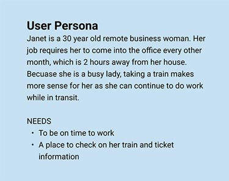
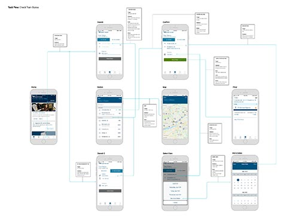
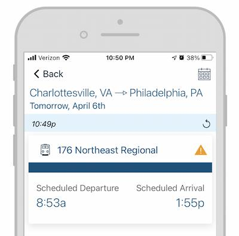
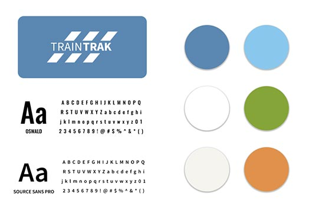
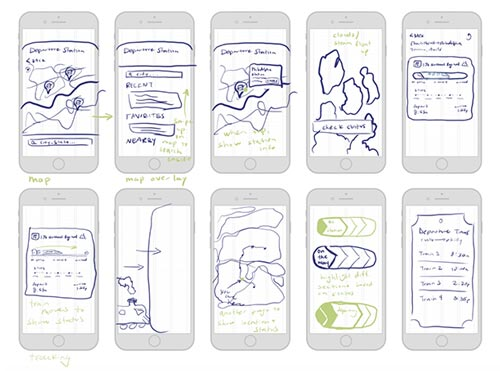
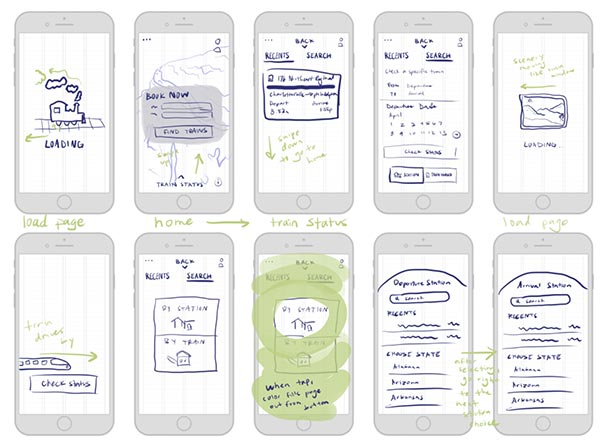
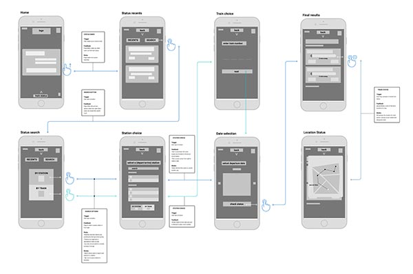
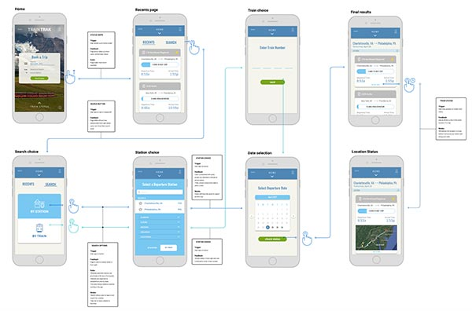
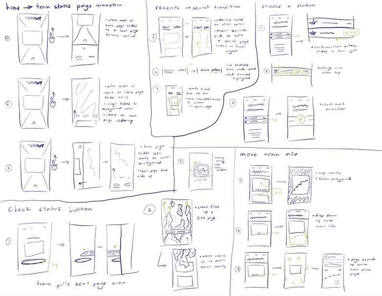
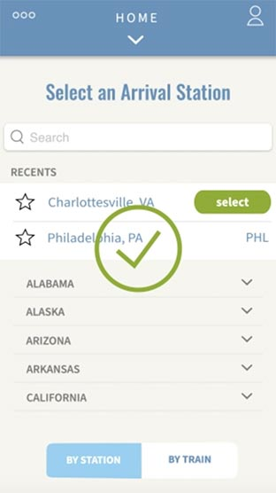

In this redesign, I learned the importance of microinteractions and the skills of creating signature features in mobile applications.
I also learned how to use Adobe AfterEffects to bring those microinteractions to life. I chose to redesign one main task that the app provides
in order to be able to focus on the smaller details that could possibly go unnoticed when working on a larger scale.
What Is Amtrak?
Amtrak is a passenger railroad service that provides travel all across the United States. With the Amtrak app users can get simple and
intuitive access to all the travel information they will need, whenever they need it. The task that I decided to redesign is the ‘check status’
feature which allows users to easily access real-time updates on any train and its arrival times.

Here is a user persona that I used as a reference throughout the design process
01
getting started
Using Figma, I put together this task flow to demonstrate how the current train status function is organized. This diagram also highlights the
microinteractions on each page.

The strongest piece of design in the train status task flow is the final result page. Once the search for a specific train is completed,
a card appears informing the user of the location, train number, departure and arrival times, and any delays occurring. I believe the layout of
this information is very easy to look at and comprehend, which is useful when travelers are in a hurry.

However, the train status task flow is weak in the way that users are forced to go through the search process every time they need to check
their train status. This process is highly inefficient and frustrates the users who need quick access. An interaction that I think needs
changing is also the search process itself. Currently, the search is a simple form where users enter their departure and arrival stations,
departure date, train number, and then tap submit. While this is a fine solution, I thought it might be more intriguing to break up each data
entry point into separate tasks to create a more interactive experience.
02
planning

For the rebranding of the Amtrak app, I decided to stick with the same basic color palette that was originally put in place.
Amtrak's main color, blue, gives the users a feeling of trust and reliability which is essential for a travel app.
In terms of typography, the original font choices were desperate for some variety. I kept the main font, source sans pro,
but added Oswald to use for larger headings.
Finally, I ended up renaming the app to TrainTrak as it is specific to the task of tracking the status of a train and
it is still recognizable to the original name.
Sketches


To spark my creativity and to get a sense of how I wanted my designs and interactions to look, I used Procreate on my iPad to sketch
different ideas of all the different screens. Most of the things drawn in green are there to show the movement of a microinteraction.
Wireflow
Using these sketches, and my idea of breaking up the separate tasks during the search process, I came up with the wireframes for my design.
They consisted of only gray boxes and a few defining words, but it was a major step in creating the structure and organization for the overall
task flow before getting into the details of the design. One of the major changes, as you can see in the image below, was that I changed the
trigger on the switch from the home screen to the train status page. Instead of tapping on an icon to get to the train status page, the user will
swipe up on the home screen. This way, the user will start to gain the habit of sliding up to easily access information, and it saves the user a
few seconds of looking for an icon.

03
designing

Building off of my structure, all I had left for the design was to fill everything out with color, pictures, fonts, and shapes.
The tasks being done are still the same as in the original, but because each step is broken down it gives the aesthetic a cleaner look,
making the process smoother and leading to fewer errors.

Before starting to animate in adobe after effects, I sketched out a few ideas of the main interactions I wanted to focus on making.
This helped me gain a clearer understanding of how my microinteractions could play out, and what the details would look like.
Changes
After importing my frames from Figma to after effects, I got to work with animating everything. After completing my first version,
I took a step back to evaluate my decisions and see if anything needed changing. I realized that on the screen where users select their
train station, I had an animation that interrupted the flow. After they tap on their station, a button appears asking to confirm their
selection, and then a checkmark appears on the screen confirming that they selected it. While it is helpful to have confirmation, I realized
that the checkmark was redundant, so I had to entirely take it out.

04
final results
click below to view the final video made in After Effects
Final Thoughts
One of my favorite microinteractions is the loading screen before the train status results page appears. It resembles a moving
landscape through the window of a train. I enjoy this animation because it is a key signature moment that is specific to Amtrak and
relates to its users.
After looking back on this project, one thing I would add would be some form of progress status during the different steps of the
train search. I think this would let the users know how much left they have to go and give them a sense of control in what they are doing.
Overall, I believe that this updated process and design will help users have a more enjoyable experience with TrainTrak.